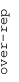
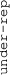

These results are also available as PDF and EPS documents.
Depending on your display resolution, scrolling or zooming may be necessary.
|  |
| 3 |
| 0 |
| -3 |
|  |
| GO:0098609 cell-cell adhesion | |||||||||||
| GO:0006814 sodium ion transport | |||||||||||
| GO:0003341 cilium movement | |||||||||||
| GO:0043395 heparan sulfate proteoglycan binding | |||||||||||
| GO:0032693 negative regulation of interleukin-10 production | |||||||||||
| GO:0008430 selenium binding | |||||||||||
| GO:0030330 DNA damage response, signal transduction by p53 class mediator | |||||||||||
| GO:0008076 voltage-gated potassium channel complex | |||||||||||
| GO:1904724 tertiary granule lumen | |||||||||||
| GO:0045687 positive regulation of glial cell differentiation | |||||||||||
| GO:0003735 structural constituent of ribosome | |||||||||||
| GO:0070469 respiratory chain | |||||||||||
| GO:0030374 ligand-dependent nuclear receptor transcription coactivator activity | |||||||||||
| GO:0031902 late endosome membrane | |||||||||||
| GO:0016241 regulation of macroautophagy | |||||||||||
| GO:0032266 phosphatidylinositol-3-phosphate binding | |||||||||||
| GO:0033617 mitochondrial respiratory chain complex IV assembly | |||||||||||
| GO:0006839 mitochondrial transport | |||||||||||
| GO:0016254 preassembly of GPI anchor in ER membrane | |||||||||||
| GO:0001666 response to hypoxia | |||||||||||
| GO:0000042 protein targeting to Golgi | |||||||||||
| GO:0070006 metalloaminopeptidase activity | |||||||||||
| GO:0005787 signal peptidase complex | |||||||||||
| GO:0031338 regulation of vesicle fusion | |||||||||||
| GO:0035578 azurophil granule lumen | |||||||||||
| GO:0045071 negative regulation of viral genome replication | |||||||||||
| GO:0006665 sphingolipid metabolic process | |||||||||||
| GO:0060170 ciliary membrane | |||||||||||
| GO:0007229 integrin-mediated signaling pathway | |||||||||||
| GO:0008081 phosphoric diester hydrolase activity | |||||||||||
| GO:0005385 zinc ion transmembrane transporter activity | |||||||||||
| GO:0006897 endocytosis | |||||||||||
| GO:0007346 regulation of mitotic cell cycle | |||||||||||
| GO:0006486 protein glycosylation | |||||||||||
| GO:0090502 RNA phosphodiester bond hydrolysis, endonucleolytic | |||||||||||
| GO:0090002 establishment of protein localization to plasma membrane | |||||||||||
| GO:0006928 movement of cell or subcellular component | |||||||||||
| GO:0045171 intercellular bridge | |||||||||||
| GO:0099132 ATP hydrolysis coupled cation transmembrane transport | |||||||||||
| GO:0004860 protein kinase inhibitor activity | |||||||||||
| GO:1903231 mRNA binding involved in posttranscriptional gene silencing | |||||||||||
| GO:0002377 immunoglobulin production | |||||||||||
| GO:0042571 immunoglobulin complex, circulating | |||||||||||
| GO:0045095 keratin filament | |||||||||||
| GO:0005549 odorant binding | |||||||||||
| GO:0050907 detection of chemical stimulus involved in sensory perception | |||||||||||
| GO:0071222 cellular response to lipopolysaccharide | |||||||||||
| GO:0005681 spliceosomal complex | |||||||||||
| GO:0042787 protein ubiquitination involved in ubiquitin-dependent protein catabolic process | |||||||||||
| GO:0042393 histone binding | |||||||||||
| GO:0000775 chromosome, centromeric region | |||||||||||
| GO:0006418 tRNA aminoacylation for protein translation | |||||||||||
| GO:0001731 formation of translation preinitiation complex | |||||||||||
| GO:0006260 DNA replication | |||||||||||
| GO:0042254 ribosome biogenesis | |||||||||||
| GO:0005814 centriole | |||||||||||
| GO:0005671 Ada2/Gcn5/Ada3 transcription activator complex | |||||||||||
| GO:0000408 EKC/KEOPS complex | |||||||||||
| GO:0000178 exosome (RNase complex) | |||||||||||
| GO:0042719 mitochondrial intermembrane space protein transporter complex | |||||||||||
| GO:0008139 nuclear localization sequence binding | |||||||||||
| GO:0006417 regulation of translation | |||||||||||
| GO:1904115 axon cytoplasm | |||||||||||
| GO:0043968 histone H2A acetylation | |||||||||||
| GO:0000502 proteasome complex | |||||||||||
| GO:0006457 protein folding | |||||||||||
| GO:0051726 regulation of cell cycle | |||||||||||
| GO:0008180 COP9 signalosome | |||||||||||
| GO:0006368 transcription elongation from RNA polymerase II promoter | |||||||||||
| GO:0008234 cysteine-type peptidase activity | |||||||||||
| GO:1990830 cellular response to leukemia inhibitory factor | |||||||||||
| GO:0015075 ion transmembrane transporter activity | |||||||||||
| GO:0072546 ER membrane protein complex | |||||||||||
| GO:0008168 methyltransferase activity | |||||||||||
| GO:0016829 lyase activity | |||||||||||
| GO:0009451 RNA modification | |||||||||||
| GO:0016180 snRNA processing | |||||||||||
| GO:0006415 translational termination | |||||||||||
| GO:0005741 mitochondrial outer membrane | |||||||||||
| GO:0008022 protein C-terminus binding | |||||||||||
| GO:0006888 ER to Golgi vesicle-mediated transport | |||||||||||
| GO:0006470 protein dephosphorylation | |||||||||||
| GO:0050660 flavin adenine dinucleotide binding | |||||||||||
| GO:0007076 mitotic chromosome condensation | |||||||||||
| GO:0022604 regulation of cell morphogenesis | |||||||||||
| GO:0003841 1-acylglycerol-3-phosphate O-acyltransferase activity | |||||||||||
| GO:0005085 guanyl-nucleotide exchange factor activity | |||||||||||
| GO:0006749 glutathione metabolic process | |||||||||||
| GO:0006541 glutamine metabolic process | |||||||||||
| GO:0045671 negative regulation of osteoclast differentiation | |||||||||||
| GO:0019706 protein-cysteine S-palmitoyltransferase activity | |||||||||||
| GO:0045540 regulation of cholesterol biosynthetic process | |||||||||||
| GO:0009966 regulation of signal transduction | |||||||||||
| GO:0042626 ATPase activity, coupled to transmembrane movement of substances | |||||||||||
| GO:0006699 bile acid biosynthetic process | |||||||||||
| GO:0048705 skeletal system morphogenesis | |||||||||||
| GO:0004550 nucleoside diphosphate kinase activity | |||||||||||
| GO:0030983 mismatched DNA binding | |||||||||||
| GO:0007156 homophilic cell adhesion via plasma membrane adhesion molecules | |||||||||||
| GO:0015695 organic cation transport |